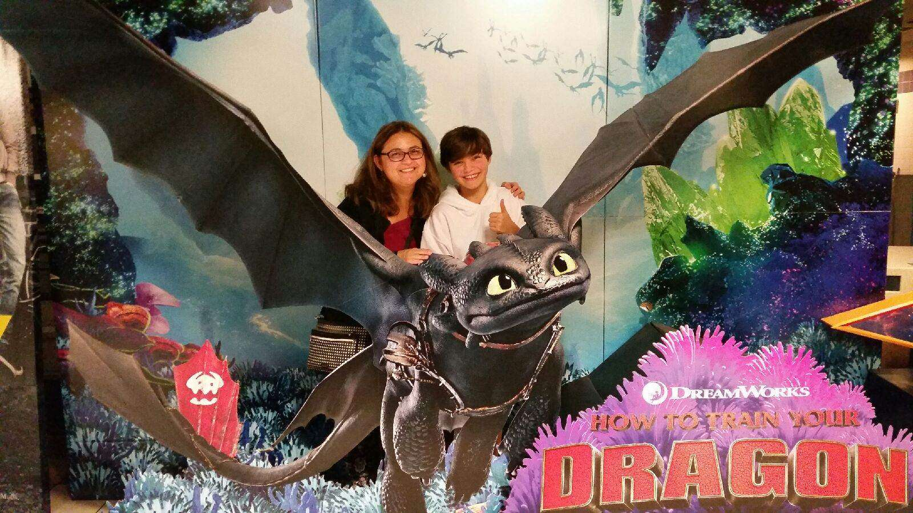

SOPHIA PROCTER
Caption: My mom and I at the theater for How To Train Your Dragon: Hidden World.
ABOUT ME
INTERESTS
I have a great many interests specifically audio engineering and learning about fictional worlds, and because of the latter interest I get into fandoms easily and once I enter a fandom, it stays with me. As far as specific media that mean a lot to me I would have to go with Star Wars, Doctor Who, Middle Earth, How to Train Your Dragon and Disney.
HOBBIES
I have mostly hobbies relating to audio engineering in some way shape or form. These would be recording music, playing music and using audio gear. I have a few hobbies that are unrelated to audio engineering though such as watching movies and playing video games.
GOALS
My current goal is to be an audio engineer as well as learn in the ins and outs of technical theater, preferably with an audio focus, but I'm happy to learn about all the other aspects of technical theater as well.